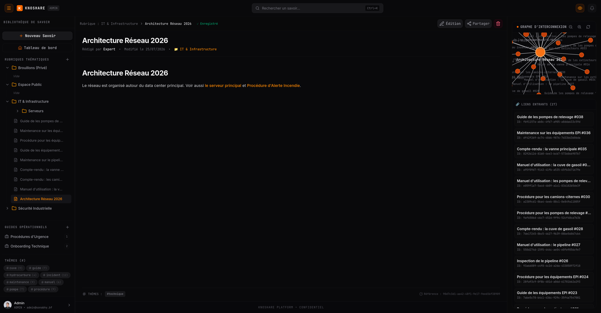

W.Ezekiel NACOULMA
Ingénieur logiciel · .NET / React
Élève ingénieur en génie informatique, en fin de cycle. J'ai conçu, développé et déployé seul une plateforme de gestion des connaissances à recherche sémantique. À l'aise du domaine métier jusqu'au déploiement.
Compétences
Back-end
C#, .NET 10 / ASP.NET Core, Entity Framework Core, API REST, Clean Architecture, CQRS
Front-end
React, TypeScript, TailwindCSS, Vite, Next.js
Données
PostgreSQL, MongoDB, Oracle, Qdrant (base vectorielle), MinIO
DevOps
Docker, Podman, Nginx, Git / GitHub Actions, Linux, Windows Server
Sécurité
OIDC, AD FS / Active Directory, JWT, RBAC, notions CCNA
Autres
Java, Python, PHP, SQL · Scrum, UML · Visual Studio, VS Code
Parcours
-
Mai – Juil. 2026
Développeur logiciel — stage de fin de cycle | SONABHY
Direction des Systèmes d'Information · Projet KnoShare, plateforme de partage des connaissances techniques
- Conçu et livré la plateforme en autonomie sur 12 semaines : .NET 10 (Clean Architecture, CQRS), React 19, PostgreSQL, Qdrant.
- Recherche sémantique locale par embeddings : 88 % de précision contre 52 % pour la recherche par mots-clés.
- Sécurisé les accès (SSO AD FS, RBAC à 4 rôles) : aucune fuite sur 200 tentatives de contournement.
- Déployé sur intranet cloisonné (Podman, Nginx) avec CI GitHub Actions : 1,7 s de latence à 50 utilisateurs simultanés.
-
Août – Oct. 2025
Réseaux et support — stage de perfectionnement | Telecel Faso SA
Opérateur de télécommunications, Ouagadougou
- Configuration et maintenance des équipements réseaux du parc interne.
- Assistance technique aux utilisateurs et suivi des incidents.
-
2023 – 2026
Diplôme d'Ingénieur des Travaux — Génie informatique | Université Aube Nouvelle
Mémoire sur les plateformes sémantiques de gestion des connaissances · diplôme en cours d'obtention
-
2020 – 2023
Baccalauréat série H — Informatique | Lycée Technique National / ASL
Baccalauréat technique, option informatique
Diplômes & Certifications
Diplôme d'Ingénieur des Travaux
Génie informatique — Université Aube Nouvelle
2023 – 2026 · en cours d'obtention
Voir le diplômeProjets

KnoShare — SONABHY
Plateforme de partage des connaissances techniques à recherche sémantique locale par embeddings (88 % de précision), SSO AD FS et RBAC, déployée sur intranet cloisonné.
Projet interne — code non public
TontApp
Plateforme SaaS de digitalisation des tontines africaines — épargne collective avec paiement mobile money, audit immuable et score crédit.
Voir sur GitHubPass Facile API
API de billetterie événementielle — Clean Architecture, CQRS, authentification JWT par OTP, stockage MinIO.
Voir sur GitHubMyApp — Full-Stack Template
Template multi-tier production-ready — API .NET, dashboard Next.js, app mobile Flutter, monitoring Prometheus/Grafana, CI/CD.
Voir sur GitHubHomelab Infrastructure
Infrastructure virtualisée sécurisée — pfSense, Ubuntu Server, Windows Server, Active Directory, Fail2Ban, tests de pénétration.
Voir sur GitHubMedInfo Burkina
Système de gestion des dossiers médicaux — hackathon Come 2 Code 2025.
UrbanHome — Projet Intégrateur L2
Application web de gestion immobilière — multi-profils, messagerie, rendez-vous, paiements.
Voir sur GitHub
Langues & centres d'intérêt
Langues
- Mooré — maternelle (C2)
- Français — courant (C1)
- Anglais — intermédiaire (B2)
Centres d'intérêt
- Football
- Projets personnels de développement
- Gaming